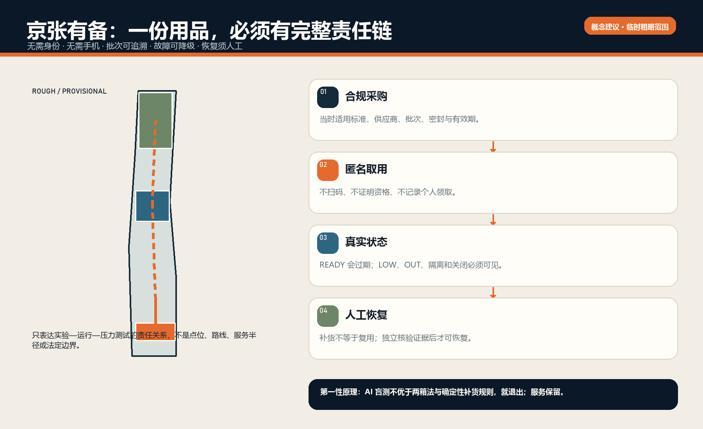
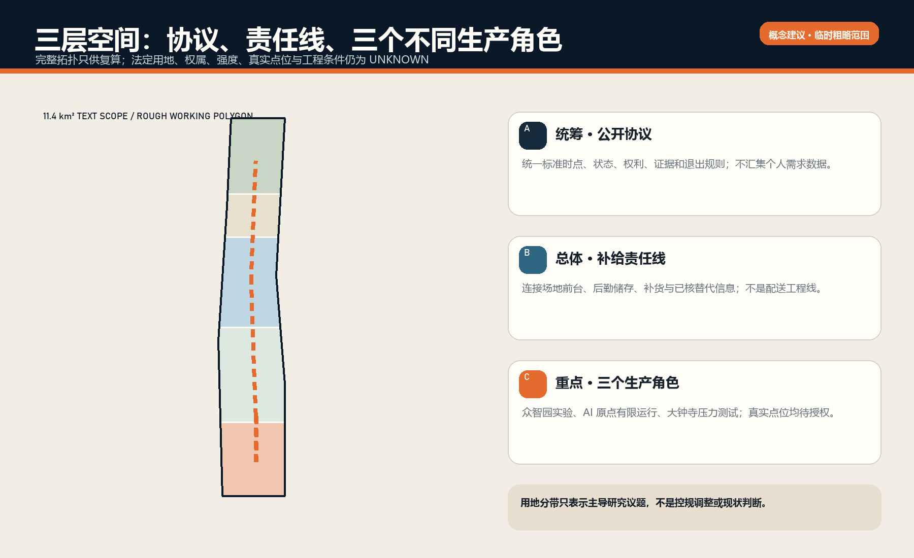
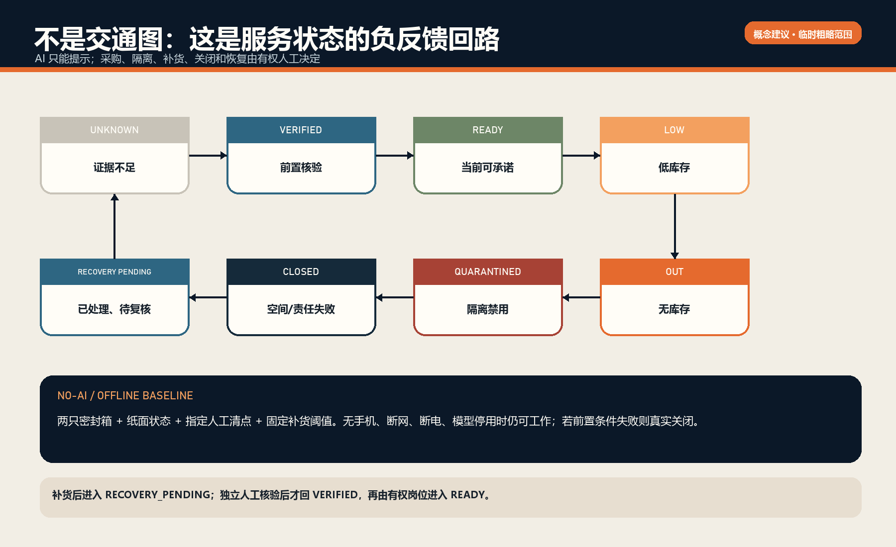
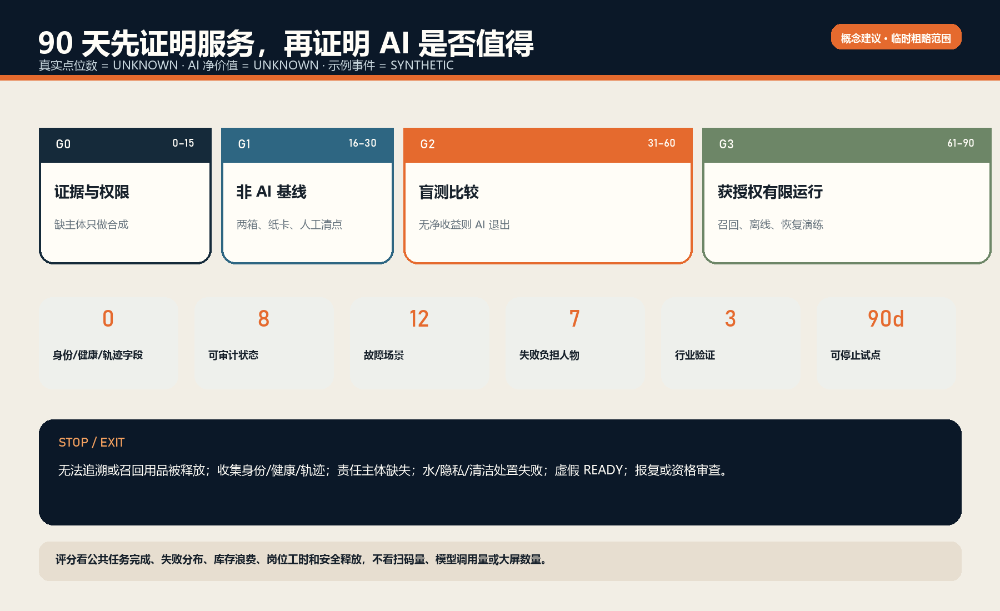
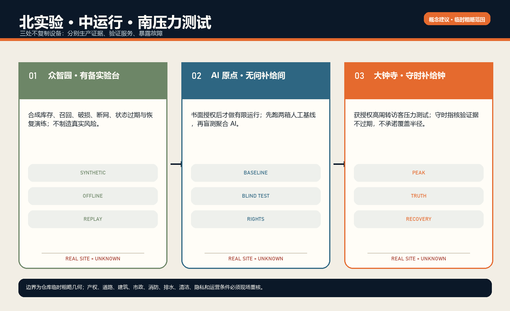

01 / FIRST PRINCIPLES
先有服务，再问 AI
AI 不优于两箱法与确定性补货规则，就退出；匿名、纸面和人工服务保留。真实点位和 AI 净价值当前均为 UNKNOWN。

02 / THREE SCALES
不是沿线复制设备
统筹范围生产公开协议，总体范围组织责任线，三片区分别实验、有限运行和压力测试。

03 / CONTROL LOOP
状态必须会变坏
READY 证据过期即回 UNKNOWN；破损、过期、召回进 QUARANTINED；补货后仍需人工恢复核验。

04 / 90 DAYS
可停止，才是试点
0–15 天证据与权限，16–30 天非 AI 基线，31–60 天盲测，61–90 天获授权有限运行。

05 / KEY AREAS
北实验、中运行、南压力测试
所有空间均为概念载体。大钟寺名称来自任务书；当前矩形不是官方边界。

06 / AUDIT
专业审查索引
总览地图 · 三层范围 · 重点区域 · 用地分区 · 交通慢行 · 蓝绿公共空间 · 建筑 · 更新项目 · AI 场景 · 核心指标 · 任务覆盖 · 自检状态 · 来源 · 假设
以下空间指标由提交 GeoJSON 在 EPSG:4548 中复算；它们描述临时粗略工作几何，不是法定控制或真实服务绩效。